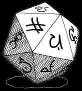
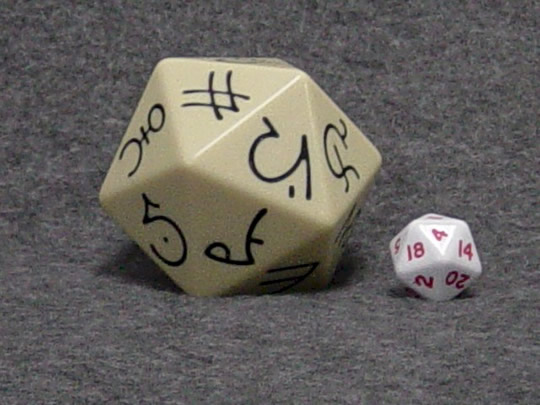

Fist of Emirikol
译者说明：
参加RPGA组织一项名为D&D Player Rewards的计划后，玩家们会收到一些新的冒险模组与设定等，其中有一个次级神器 ─ 埃米瑞寇勒之拳 (Fist of Emirikol)。
它是一个有着20面的”球体”……想到什么了吗?
没错，它是一个象牙色，有着奇特黑色符文徽记的20面骰。
设计师们教那些没有拿到的玩家自己制作，剪裁有着符文图案的纸片后将它包覆在55mm的20面骰上，如此你就有一个实体神器可以使用��。它可以运用在冒险中实际操作。
设计师们也提供了线上虚拟掷骰，它会随机产生一个符文与其功能供玩家使用。
以下是线上虚拟掷骰的网页。
http://www.wizards.com/dnd/images/fist_dice/index.asp
以下是介绍的试译与我所整理并试译的神器功能表。要特别说明的是，这是设计师们根据3.5版规则设计的，所以诸如有害变形术(baleful polymorph spell)便是新版的法术。而”强大(所有学派)”是新版的侦测魔法灵光的呈现方式。此外里面也包括一些新的状态。
----------

埃米瑞寇勒之拳 (Fist of Emirikol)
不论当初是否为混沌者-埃米瑞寇勒所创造，那位恶名昭彰的施法者持有这个强大的魔法武器，造成了许多严重的事件，以致于它的名字不可挽回地与他相连。
这个多面的”球体”是由某种未知生物的骨或角雕成。它的20个面上都雕刻着一个不同的符文，每个都给予某种攻击性魔法效应。
当朝目标丢出时，作为一个远程触碰攻击，若成功击中，埃米瑞寇勒之拳的某种力量便会随机启动。它的力量每天只能作用一次，启动后便会立刻崩解，第二天又会在拥有者身上的某个小袋子里重组形成。
强大 (所有学派)；施法者等级 20；重量 1 磅。
----------
1.防护：目标被解除魔法(1d20+10)。
2.强酸：目标受到3d6点强酸伤害，DC 20，反射过则减半。
3.目盲：使目标目盲(如同目盲术/耳聋术)，DC 20，强韧过则无效。
4.混乱：目标永久困惑(如同夺魄术)，DC 20，意志过则无效。
5.寒冷：目标受到10d6点寒冷伤害，DC 20，反射过则减半。
6.咒法：中型土元素出现于目标身旁，持续攻击7轮。
7.预言：下一次对目标进行攻击时，你获得+20的洞察加值(必须在一分钟内进行)。
8.邪恶：最高生命骰数10 HD的目标进入昏睡状态1小时，DC 20，强韧过则无效；除了解除效果以外，不能被任何方式唤醒。
9.塑能：目标受到魔法飞弹攻击，造成1d4+1点伤害。
10.力竭：使目标力竭5分钟，DC 20，强韧过则无效。
11.恐惧：使目标逃跑1d4轮(如同惊恐术，但没有生命骰数限制)；DC 20，意志过则无效。
12.火焰：目标受到15d6点火焰伤害；DC 20，反射过则减半。
13.幻术：目标受到魅影杀手攻击，DC 20，意志过则不相信；DC 20，强韧过则部分有效。
14.秩序：使目标晕眩1轮，DC 20，意志过则无效。
15.闪电：目标受到5d6点电击伤害；DC 20，反射过则减半。
16.死灵：使目标生病达24小时；DC 20，强韧过则无效。
17.麻痹：使目标麻痹(如同怪物定身术)，DC 20，意志过则无效。
18.石化：将目标变成岩石，DC 20，强韧过则无效。
19.变化：将目标变成蟾蜍(如同有害变形术)，DC 20，强韧过则无效。
20.虚弱：1分钟内，目标在攻击与武器伤害上遭受-2减值，DC 20，强韧过则无效。
